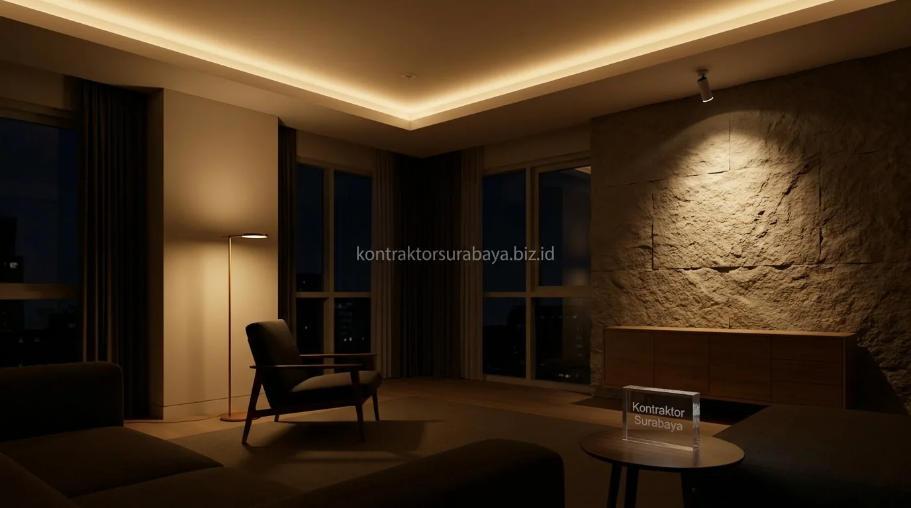

Dalam perancangan interior rumah mewah di kawasan prestisius Surabaya seperti Citraland, Graha Family, Kertajaya Indah, hingga Dharmahusada, pencahayaan bukan sekadar sarana penerangan ruangan saat malam tiba. Lighting design adalah jiwa dari estetika interior yang mampu mengubah marmer mewah, panel kayu jati berukir, dan karya seni dinding menjadi pertunjukan visual yang berkelas dan dramatis. Penataan lampu yang presisi mencegah ruangan tampak suram membosankan atau sebaliknya, menyilaukan mata para tamu penting Anda.
1. Kenapa Ruang Tamu Bisa Terasa Suram atau Silau Sekaligus?
Penempatan sumber cahaya yang terpusat pada satu titik tanpa lapisan pencahayaan tambahan sering membuat area di bawah lampu terasa silau, sementara sudut ruangan lain tetap gelap dan suram.
Rumah mewah dengan ruang tamu berukuran besar sering kali hanya mengandalkan satu lampu gantung besar (chandelier) atau downlight putih terang tepat di tengah ruangan. Akibatnya, cahaya tidak terdistribusi secara merata ke seluruh sudut ruangan, menciptakan bayangan kontras tajam (harsh glare) yang membuat mata cepat lelah dan mereduksi keindahan material furnitur di sudut-sudut ruangan.
2. Tiga Lapisan Pencahayaan dalam Lighting Design
Ambient sebagai pencahayaan dasar ruangan, task untuk aktivitas tertentu seperti membaca, dan accent untuk menonjolkan elemen dekoratif adalah tiga lapisan utama dalam lighting design yang baik:
- Ambient Lighting (Cahaya Dasar): Memberikan penerangan menyeluruh yang lembut dan merata, biasanya bersumber dari cove lighting (LED strip tersembunyi di plafon) atau indirect ceiling lamps.
- Task Lighting (Cahaya Fungsional): Ditempatkan pada area aktivitas spesifik seperti standing lamp di samping sofa empuk atau table lamp di atas credenza konsol.
- Accent Lighting (Cahaya Sorot Estetik): Menggunakan spotlight terarah untuk menonjolkan tekstur batu alam, lukisan galeri seni, atau piala koleksi pribadi.

3. Bagaimana Menentukan Titik Lampu Berdasarkan Fungsi Ruangan?
Titik lampu perlu ditempatkan mengikuti fungsi dan tata letak furnitur, bukan sekadar mengikuti pola simetris pada langit-langit tanpa mempertimbangkan aktivitas di bawahnya.
Area duduk sofa utama membutuhkan pencahayaan yang menyebar halus dari samping atau pantulan plafon, bukan lampu sorot tegak lurus yang menyorot langsung ke kepala tamu saat duduk berhadapan. Sementara koridor transisi dan area pajangan membutuhkan spotlight dengan sudut pancaran sempit (beam angle 15°-24°) agar detail karya seni tampil memukau.
4. Suhu Warna Lampu dan Pengaruhnya terhadap Suasana Ruangan
Suhu warna hangat cocok untuk suasana ruang tamu yang santai, sementara suhu warna netral hingga dingin lebih sesuai untuk kesan formal dan modern pada ruang tamu mewah:
- Warm White (2700K - 3000K): Menghadirkan atmosfer akrab, hangat, dan sangat menonjolkan urat kayu jati serta kilau marmer krem.
- Natural White (4000K): Memberikan tampilan warna objek yang sangat akurat dan bersih, ideal untuk gaya interior modern kontemporer.
- Cool White (5000K - 6500K): Jarang digunakan di area ruang tamu residensial mewah karena memberi kesan terlalu dingin kaku seperti rumah sakit.
5. Penggunaan Dimmer untuk Fleksibilitas Intensitas Cahaya
Dimmer memungkinkan intensitas cahaya disesuaikan sesuai kebutuhan, mulai dari terang penuh saat menerima tamu formal hingga redup untuk suasana santai di malam hari.
Integrasi sakelar peredup cahaya (dimmer module) berbasis smart home memungkinkan Anda menciptakan berbagai skenario pencahayaan (lighting scenes) seperti "Welcome Mode", "Dinner Party", atau "Relax Night" hanya dengan satu sentuhan pada smartphone atau panel kendali dinding.
6. Kesalahan Umum dalam Merancang Pencahayaan Ruang Tamu
Hanya mengandalkan satu titik lampu utama, memilih suhu warna yang tidak konsisten antar area, menempatkan lampu terlalu dekat dengan area duduk, dan mengabaikan pencahayaan alami adalah empat kesalahan umum:
- Memasang Lampu Sorot Tepat di Atas TV / Layar: Menyebabkan pantulan silau yang mengganggu kenyamanan menonton hiburan keluarga.
- Mencampur Suhu Warna Secara Acak: Kombinasi lampu putih kebiruan dan kuning pekat dalam satu ruangan membuat interior terkesan berantakan.
- Mengabaikan Indeks Renderasi Warna (CRI Rendah): Lampu dengan CRI < 80 membuat warna karpet permadani dan furnitur mewah tampak pucat dan murah.
- Ketiadaan Desain Cove Lighting Tersembunyi: Ruangan kehilangan dimensi kedalaman visual yang menjadi ciri khas rumah mewah modern.
"Cahaya adalah elemen tak terlihat yang menyempurnakan kemewahan arsitektur; tata lampu yang sempurna membuat setiap material bernilai tinggi tampil pada puncak estetikanya."
Setiap ruang tamu memiliki ukuran, orientasi matahari, dan gaya arsitektur yang berbeda. Oleh karena itu, skema tata cahaya ideal perlu dirancang khusus melalui simulasi 3D photorealistic. Pelajari paket pengerjaan interior kami pada halaman jasa desain interior Surabaya, atau lihat galeri karya kami di galeri proyek kami.